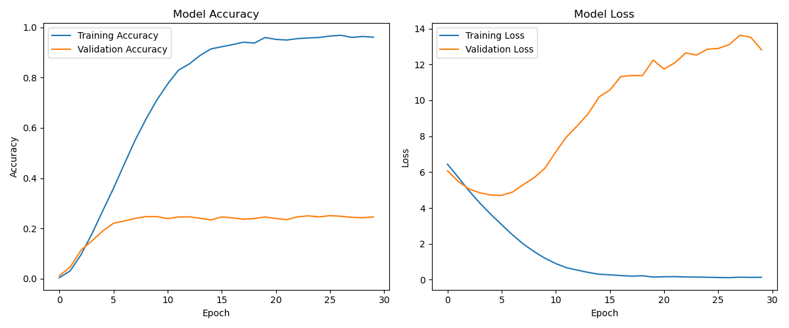
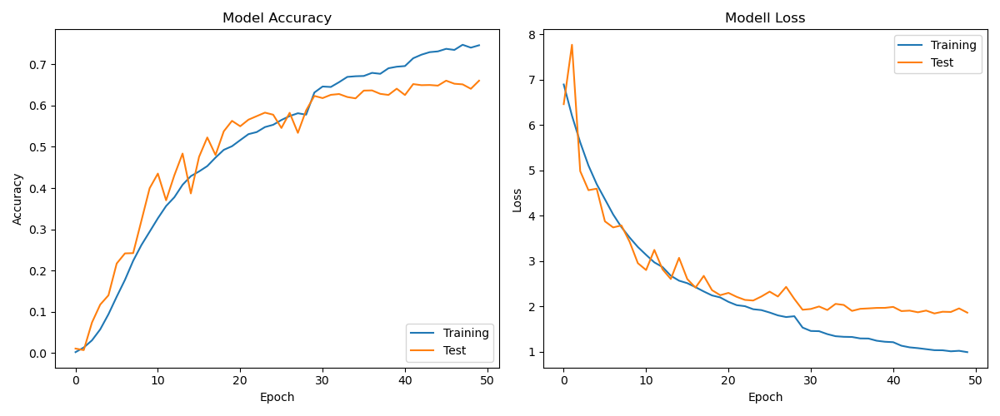
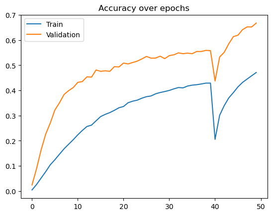

flowchart LR
subgraph input [Input]
I[64x64x3 RGB Image]
end
subgraph conv1 [Layer 1]
C1[Conv2D 32 Filters] --> MP1[MaxPooling]
end
subgraph conv2 [Layer 2]
C2[Conv2D 64 Filters] --> MP2[MaxPooling]
end
subgraph conv3 [Layer 3]
C3[Conv2D 128 Filters] --> MP3[MaxPooling]
end
subgraph dense [Dense Layers]
F[Flatten] --> D1[Dense 256 neurons]
D1 --> Out[Output Layer]
end
I --> C1
MP1 --> C2
MP2 --> C3
MP3 --> F
style input fill:#e1f5fe
style conv1 fill:#ffecb3
style conv2 fill:#ffecb3
style conv3 fill:#ffecb3
style dense fill:#e8f5e9
Deep Learning Report
This report summarizes the details of the deep learning activities for Pokémon image classification.
Initial Situation
Our aim for the deep learning component is to accurately identify Pokémon from images, which complements the battle prediction system. This visual recognition capability allows users to upload images of Pokémon they encounter and get immediate battle strategy recommendations.
The dataset used consists of Pokémon images collected from various sources and organized into a structured format in the data_acquisition/image_dataset/final_pokemon_dataset directory, with separate train and test folders.
Our independent variables are the pixel values of the Pokémon images, and our dependent variable is the Pokémon species label. We created three different deep learning models: a CFAR (Convolutional Filter and Response) model, a custom CNN (Convolutional Neural Network), and a pre-trained transfer learning model using EfficientNetB0.
- Aim of the modeling: Create an accurate image classifier that can identify Pokémon species from images
- Dataset used: Collection of Pokémon images organized by species in the final_pokemon_dataset folder
- Independent variables: Image pixel values (RGB channels)
- Target variable: Pokémon species name
- Types of models used: CFAR, CNN, and pre-trained EfficientNetB0
Model Descriptions
This section provides an overview of the three deep learning models implemented for Pokémon image classification.
CFAR Model
The CFAR (Convolutional Filter and Response) model is a lightweight convolutional neural network designed for basic Pokémon image classification.
- Implementation details:
- Library: TensorFlow/Keras
- Input shape: 64x64x3 (RGB images)
- Architecture:
- 3 convolutional layers (32, 64, and 128 filters)
- 3 max pooling layers
- 1 dense hidden layer (256 neurons)
- Output layer with softmax activation
- Optimizer: Adam
- Loss function: Categorical cross-entropy
- Training: 30 epochs with validation after each epoch
- Modeling pipeline:
The diagram above illustrates the architecture of the CFAR model. Starting with an input RGB image (64x64x3), the data flows through three convolutional layers with increasing filter sizes (32, 64, and 128), each followed by a MaxPooling operation to reduce dimensionality. The feature maps from the final convolutional layer are flattened and passed through a dense layer with 256 neurons, which connects to the output layer for classification. This sequential structure enables the model to progressively extract and refine features from the input images before making the final classification decision.
- Code link:
deployment/image_classification/cfar/train_pokemon_classifier_cfar.py - Hyperparameters:
- Learning rate: Default for Adam optimizer
- Batch size: 32
- Image size: 64x64 pixels
- No data augmentation
CNN Model
The CNN model is a more advanced deep learning architecture with multiple convolutional layers designed for improved feature extraction and classification accuracy.
- Implementation details:
- Library: TensorFlow/Keras
- Input shape: 64x64x3 (RGB images)
- Architecture:
- 4 convolutional layers with batch normalization and dropout
- Each layer has double convolution layers with increasing filter sizes (32→64→128→256)
- Max pooling after each layer
- Flatten layer followed by dense layer (512 neurons)
- Output layer with softmax activation
- Optimizer: Adam with configurable learning rate
- Loss function: Categorical cross-entropy
- Training: Up to 80 epochs with early stopping and learning rate reduction
- Modeling pipeline:
flowchart LR
subgraph input [Input]
I[64x64x3 RGB Image]
end
subgraph aug [Data Augmentation]
A1[Random Rotation] --> A2[Width/Height Shifts]
A2 --> A3[Shear Transform]
A3 --> A4[Zoom]
A4 --> A5[Horizontal Flip]
end
subgraph conv1 [Layer 1]
C1A[Conv2D 32] --> BN1A[BatchNorm]
BN1A --> C1B[Conv2D 32]
C1B --> BN1B[BatchNorm]
BN1B --> MP1[MaxPooling]
MP1 --> D1[Dropout 0.25]
end
subgraph conv2 [Layer 2]
C2A[Conv2D 64] --> BN2A[BatchNorm]
BN2A --> C2B[Conv2D 64]
C2B --> BN2B[BatchNorm]
BN2B --> MP2[MaxPooling]
MP2 --> D2[Dropout 0.25]
end
subgraph conv3 [Layer 3]
C3A[Conv2D 128] --> BN3A[BatchNorm]
BN3A --> C3B[Conv2D 128]
C3B --> BN3B[BatchNorm]
BN3B --> MP3[MaxPooling]
MP3 --> D3[Dropout 0.25]
end
subgraph conv4 [Layer 4]
C4A[Conv2D 256] --> BN4A[BatchNorm]
BN4A --> C4B[Conv2D 256]
C4B --> BN4B[BatchNorm]
BN4B --> MP4[MaxPooling]
MP4 --> D4[Dropout 0.25]
end
subgraph dense [Dense Layers]
F[Flatten] --> DL1[Dense 512]
DL1 --> BN5[BatchNorm]
BN5 --> D5[Dropout 0.5]
D5 --> Out[Output Layer]
end
I --> A1
A5 --> C1A
D1 --> C2A
D2 --> C3A
D3 --> C4A
D4 --> F
style input fill:#e1f5fe
style aug fill:#e8f5e9
style conv1 fill:#ffecb3
style conv2 fill:#ffe082
style conv3 fill:#ffd54f
style conv4 fill:#ffca28
style dense fill:#e8f5e9
The diagram above illustrates the more complex CNN architecture used for Pokémon classification. This model features four convolutional layers with progressively increasing filter sizes (32→64→128→256), each implementing a double convolution pattern. The pipeline begins with data augmentation techniques (rotation, shifts, shear, zoom, and flipping) that enhance the training dataset and improve generalization. Every layer follows the same structure: two convolutional layers, each followed by batch normalization, then max pooling, and finally dropout (0.25) to prevent overfitting. After the convolutional layers, the data is flattened and passed through a dense layer with 512 neurons, followed by batch normalization and a higher dropout rate (0.5) before the final classification layer. This architecture significantly outperforms the simpler CFAR model by incorporating modern deep learning techniques like batch normalization and employing a deeper structure for more sophisticated feature extraction.
- Code link:
deployment/image_classification/CNN/train_pokemon_classifier_cnn.py - Hyperparameters:
- Learning rate: 0.001 (with reduction on plateau)
- Batch size: 32
- Image size: 64x64 pixels
- Dropout rates: 0.25 for convolutional layers, 0.5 for dense layer
- Data augmentation parameters: rotation, shifts, shear, zoom, horizontal flip
Pre-trained CNN Model (EfficientNetB0, Transfer Learning)
The third and most effective model uses EfficientNetB0, a modern and scalable convolutional neural network architecture pre-trained on the ImageNet dataset. Through transfer learning, the model leverages learned visual features and adapts them to the Pokémon image classification task with minimal training from scratch.
Training was conducted in two phases:
- Phase 1: The EfficientNetB0 base was frozen, and only the custom classification head was trained.
- Phase 2: The base model was partially unfrozen and fine-tuned using a lower learning rate.
To improve generalization, a strong data augmentation pipeline was applied. This increased the model’s robustness to real-world image variability such as different lighting, angles, and scales.
- Augmentation techniques included:
- Random horizontal flipping
- Random rotation
- Random zoom
- Contrast adjustment
- Brightness adjustment
- Random horizontal flipping
The model architecture consists of EfficientNetB0 (with include_top=False) as the feature extractor, followed by:
- Global Average Pooling to reduce dimensionality
- A Dense layer with 128 neurons and ReLU activation
- Dropout layer (rate: 0.5) to prevent overfitting
- A Softmax output layer for multi-class classification
Technical Summary
- Input shape: 224x224x3 RGB images
- Loss function: Sparse categorical cross-entropy
- Optimizer: Adam
- Learning rate: 1e-4 (frozen base), 1e-5 (fine-tuning)
- Learning rate: 1e-4 (frozen base), 1e-5 (fine-tuning)
- Batch size: 16
- Training epochs: 40 (early stopping applied)
- Callbacks:
- EarlyStopping with
patience=5and weight restoration - Custom callback
SaveEveryNsaving checkpoints every 10 epochs
- EarlyStopping with
Model Pipeline
flowchart LR
subgraph input [Input]
I[224x224x3 RGB Image]
end
subgraph aug [Data Augmentation]
A1[Random Flip] --> A2[Random Rotation]
A2 --> A3[Random Zoom]
A3 --> A4[Random Contrast]
A4 --> A5[Random Brightness]
end
subgraph preproc [Preprocessing]
P[EfficientNet Preprocessing]
end
subgraph base [Base Model]
EB[EfficientNetB0 Pretrained\non ImageNet]
end
subgraph head [Classification Head]
GAP[Global Average Pooling] --> D1[Dense 128]
D1 --> DO[Dropout 0.5]
DO --> Out[Output Layer]
end
subgraph training [Training Process]
T1[Phase 1: Frozen Base\n40 Epochs, LR=1e-4] --> T2[Phase 2: Fine-tuning\nLower LR=1e-5]
end
I --> A1
A5 --> P
P --> EB
EB --> GAP
Out --> training
style input fill:#e1f5fe
style aug fill:#fff9c4
style preproc fill:#f3e5f5
style base fill:#ffccbc
style head fill:#e8f5e9
style training fill:#e0f2f1
This diagram shows the entire processing pipeline: the input image is augmented, preprocessed, passed through the EfficientNetB0 base model, and finally classified through a custom dense head. The two-phase training approach ensures both rapid convergence and effective fine-tuning.
Results
The performance of each model varies based on their architecture complexity and training approach. Our model development followed an iterative process: we first implemented the lightweight CFAR model alongside a basic CNN architecture. Based on the promising results of the CNN approach, we further refined the CNN architecture by adding batch normalization, dropout layers, and implementing double convolution patterns. As a third strategy, we adopted transfer learning by training an EfficientNetB0 pre-trained model to expand our comparison of different deep learning approaches.
CFAR Model
- Training accuracy: ~95%
- Validation accuracy: ~24%
- Simple architecture leads to faster training but lower accuracy
- Best suited for quick prototyping or when computational resources are limited

The figure above shows the training history of the CFAR model over 30 epochs. The left plot displays accuracy metrics, where training accuracy (blue line) steadily increases to approximately 95% while validation accuracy (orange line) plateaus around 24%, indicating significant overfitting. The right plot shows loss metrics, with training loss (blue) decreasing to near zero while validation loss (orange) increases dramatically after the initial epochs, further confirming the model’s poor generalization abilities.
CNN Model
- Training accuracy: ~70-75%
- Validation accuracy: ~65%
- The addition of batch normalization and dropout layers significantly reduces overfitting
- Multiple convolutional layers allow for hierarchical feature learning
- Early stopping and learning rate reduction help optimize training
- Visualization tools provide insights into training progress

The figure above illustrates the CNN model’s training history over 50 epochs. The accuracy plot (left) shows a more balanced progression between training (blue) and test/validation (orange) accuracy, both reaching approximately 70-75%. The loss plot (right) demonstrates how both training and test losses decrease steadily and remain relatively close together throughout training. This indicates the CNN model achieves better generalization performance than the CFAR model, with the regularization techniques (batch normalization and dropout) effectively mitigating overfitting.
Pre-trained CNN Model
- Training accuracy: ~45%
- Validation accuracy: ~65%
- Two-phase training approach allows for fine-tuning while avoiding catastrophic forgetting
- Higher resolution input (224x224) captures more details but requires more computational resources

This graph shows the EfficientNetB0 model’s training performance over 50 epochs. The validation accuracy (orange) improves rapidly in early epochs, demonstrating transfer learning’s efficiency. We observe a drop at epoch 40 during the transition from Phase 1 (frozen base) to Phase 2 (fine-tuning), followed by quick recovery. Final validation accuracy reaches ~65%, confirming our two-phase approach effectively adapts pre-trained knowledge to Pokémon classification while preventing catastrophic forgetting.
Model Interpretation
Our experiments with three architectures yield clear insights: - EfficientNetB0 currently performs similarly to our CNN (~65% validation accuracy), but has significantly greater potential for improvement through further fine-tuning - CNN offers balanced performance-resource trade-off (65% accuracy with moderate training time) - CFAR provides rapid prototyping capability but suffers from significant overfitting - Data augmentation is essential for all models to generalize effectively - EfficientNetB0’s pre-trained knowledge can be better leveraged with more extensive adaptation techniques
Conclusions and Next Steps
While both CNN and EfficientNetB0 models currently achieve similar performance (~65% validation accuracy), we recommend the EfficientNetB0 model for deployment due to its greater potential for optimization. Our three-model approach demonstrates that transfer learning offers a promising path forward for Pokémon image classification, especially with additional fine-tuning.
Limitations
- Current performance of all models depends on dataset quality and diversity
- Visually similar Pokémon remain challenging to differentiate
- EfficientNetB0 requires more computational resources but has significant room for improvement
- Further fine-tuning of the pre-trained layers is necessary to fully leverage ImageNet knowledge
Future Work
- More extensive fine-tuning of EfficientNetB0, especially unfreezing more layers gradually
- Expand dataset diversity with more poses and environments
- Explore more advanced transfer learning techniques to better adapt ImageNet knowledge
- Optimize for mobile via model quantization
- Implement more sophisticated data augmentation techniques specifically for Pokémon images
- Develop model ensembles combining CNN and EfficientNetB0 strengths
Deployment
- GUI testing application already developed (
pokemon_classifier_app.py) for internal validation - Web-based interface for online Pokémon recognition via our website